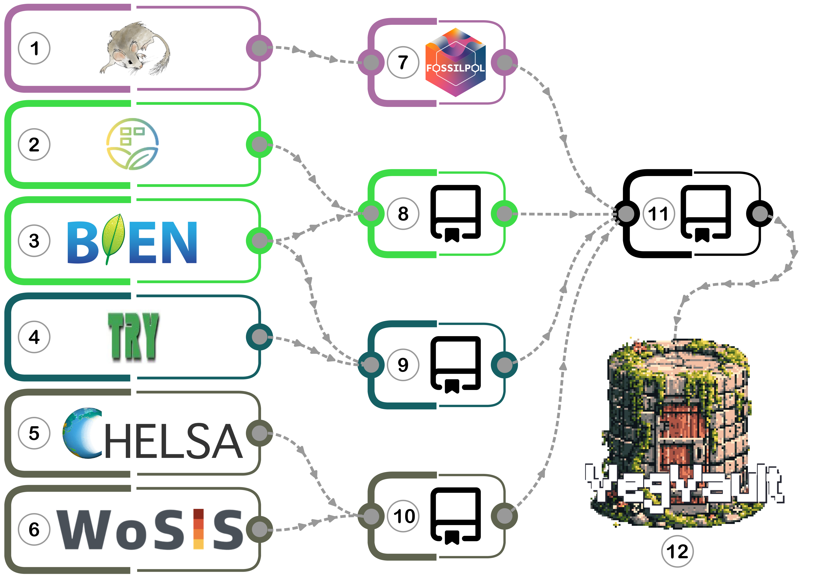

Data Assembly Process of VegVault 1.0.0
VegVault v1.0.0 has been assembled through systematic integration of multiple publicly available databases, each contributing specialized data types to create a comprehensive vegetation database spanning both temporal and ecological dimensions.
The assembly workflow visualization:
Figure legend:
Primary data sources:
- Neotoma Paleoecology Database - Fossil pollen data (0-20,000 years BP)
- sPlotOpen - Contemporary vegetation plots
- BIEN - Contemporary vegetation and functional traits
- TRY Plant Trait Database - Comprehensive plant functional traits
- CHELSA - High-resolution climate data (contemporary and paleoclimate)
- WoSIS - Global soil property data
Data Processing: Individual processing pipelines for each data type using specialized GitHub repositories
- VegVault-FOSSILPOL v1.0.0 - Fossil pollen data processing
- VegVault-Vegetation_data v1.1.0 - Contemporary vegetation processing
- VegVault-Trait_data v1.1.0 - Functional trait data processing
- VegVault-abiotic_data v1.1.0 - Environmental data processing
- VegVault v1.0.0 - Consolidation into unified SQLite database structure with key steps:
- Taxonomic Harmonization: Using the {taxospace} R package to align taxa with GBIF backbone
- Trait Categorization: Grouping traits into functional domains following Díaz et al. (2016)
- Spatial-Temporal Linking: Creating gridpoints for abiotic data and linking to vegetation samples
Reproducibility Through Version Control
All VegVault processing repositories use GitHub Tags to ensure complete reproducibility. The specific tagged versions used for v1.0.0 are documented in both our code and documentation, enabling exact replication of the database assembly process.
Data Processing Details
Fossil Pollen Records
Fossil pollen records have been downloaded from the Neotoma Paleoecology Database using their API on 26th June 2023. All data acquisition and processing have been done using the FOSSILPOL: Workflow for processing and standardizing global paleoecological pollen data (version 1.0.0). This includes the selection of depositional environments, ecological groups, chronology control point types, and a minimum number of chronology control points to construct age-depth models. Individual samples and records have been filtered by age limits, number of pollen grains, maximum age interpolation, and number of valid levels. In addition, the accuracy of fossil pollen data is increased by re-estimating all age-depth models using the Bayesian probabilistic approach and including the information about individual age uncertainty.
Selection Criteria:
- Only records with type “pollen” with valid geological coordinates (longitude between -180 and 180, latitude between -90 and 90)
- Depositional environments: lakes, bogs, and mires only (selection table)
- Specific ecological groups retained (selection table)
- Minimum 5 chronology control points (valid types)
Quality Filters:
- Minimum 125 pollen grains per sample (balanced for data retention vs. quality)
- While the preferred minimum was initially set at 150, this threshold resulted in significant data loss
- Threshold adjusted to 125 with condition that less than 75% of samples would have low pollen sum
- Age limits: 0-20,000 cal yr BP
- Exclusion of samples older than 3000 years of the last chronology control point
- Minimum 5 samples per record
- Re-calculated age-depth models using Bayesian approach {Bchron} package
Processing Details: Available at VegVault-FOSSILPOL
Contemporary Vegetation Plots
The primary sources of contemporary plot-based vegetation data are BIEN (Botanical Information and Ecology Network) and sPlotOpen (the open-access version of sPlot).
BIEN Processing:
- Downloaded using {RBIEN} R package v1.2.7 on 2nd August 2023 using function
BIEN::BIEN_plot_datasource() - Retained key columns:
datasource_id,datasource,plot_name,sampling_protocol,methodology_reference,methodology_description,longitude,latitude,plot_area_ha,subplot,individual_count,family_matched,name_matched,name_matched_author,verbatim_family,verbatim_scientific_name,scrubbed_species_binomial,scrubbed_taxonomic_status,scrubbed_family,scrubbed_author - All columns renamed using snake case
- Filtered out records with missing essential information (NA values in
datasource_id,datasource,plot_name,longitude,latitude, and/orplot_area_ha)
sPlotOpen Processing:
- Downloaded sPlotOpen v2.0 on 26th September 2023
- Linked tables
DT2.oaandheader.oaviaPlotObservationIDcolumn - Applied quality filters for geographic and area data (filtered out rows with NA values in
PlotObservationID,GIVD_ID,Longitude,Latitude, and/orReleve_area) - All columns renamed using snake case
Processing Details: Available at VegVault-Vegetation_data
Functional Traits
Following Díaz et al. (2016), we selected six key functional traits representing:
Stem specific densityLeaf nitrogen content per unit massDiaspore massPlant heightLeaf areaLeaf mass per area
TRY Database Processing:
- Data request ID:
28498on 29th August 2023 - Requested traits with codes:
3106,4,3108,3110,3112,3114,3116,3117,14, and26(closest to Díaz et al. 2016 description) - Used {rtry} R package v1.1.0 for data import
- For each trait (
TraitID), extracted all relevant observations (ObservationID), ensuring only observations unique to each trait - Identified all unique data (
DataID) associated with each trait - Excluded non-meaningful trait variations (DataID:
2221,2222,2223,2224,2225,3646,3647,3698,3699,3727,3728,3730,3731,3849,3850,4029, and4030), e.g.,height at 15 days - Extracted covariate information (additional data stored in
DataNamecolumn) - All columns renamed using snake case
- Added
Trait Domainvariable to group traits following Díaz et al. (2016) selection for efficient extraction across TRY and BIEN
BIEN Traits Processing:
- Downloaded using {RBIEN} R package v1.2.7 on 15th December 2023 using function
BIEN::BIEN_trait_trait() - Requested traits:
whole plant height,stem wood density,leaf area,leaf area per leaf dry mass,leaf nitrogen content per leaf dry mass, andseed mass - Retained columns:
trait_name,trait_value,unit,id,longitude,latitude,method,url_source,source_citation,project_pi,scrubbed_species_binomial, andaccess - Calculated derived measures (e.g.,
leaf mass per area= 1/leaf area per leaf dry mass)
Processing Details: Available at VegVault-Trait_data
Abiotic Environmental Data
The primary sources of abiotic data are CHELSA, CHELSA-TRACE21, and WoSIS Soil Profile Database. The first two data sources provide high-resolution downscaled climatic data, while the latter offers detailed soil information (only available for contemporary data).
CHELSA Climate Data:
- Contemporary: CHELSA v2.1 downloaded on 8th September 2023
- Used {ClimDatDownloadR} R package with function
ClimDatDownloadR::Chelsa.Clim.download() - Selected bio-variables:
1,4,6,12,15,18,19 - Spatial aggregation: 25x factor using median values with {terra} R package function
terra::aggregate(factor = 25, fun = "median")
Paleoclimate: CHELSA-TRACE21
- Paleoclimate: CHELSA-TRACE21 v1.0 downloaded on 31st December 2023
- Downloaded values for each 500-year time-slice between 0 and 18,000 years before present (BP)
- Selected bio-variables:
1,4,6,12,15,18,19 - For each time slice, applied spatial aggregation using
terra::aggregate(factor = 25, fun = "median")
WoSIS Soil Data:
- Downloaded on 11th September 2023 (both
HWSD2_RASTER.zipandHWSD2_DB.zip) - Extracted soil type names (column
HWSD2_SMU_ID) by combining tablesHWSD2_SMUandD_WRB4 - Added soil type information to the raster
- Resampled using
terra::resample(method = "near")function to match climate data resolution - Provides essential edaphic context for vegetation-environment relationships (contemporary data only)
Processing Details: Available at VegVault-abiotic_data
Data Integration Procedures
All processing pipelines with their corresponding Tags are migrated into an SQLite database using the GitHub repository titled VegVault, which can be accessed as DOI: 10.5281/zenodo.15201994.
Data Migration Details
Migrating sPlotOpen vegetation data:
- Dataset name (
dataset_name) created fromplot_observation_idassplot_[plot_observation_id] - Original data source from column
givd_idstored inDatasetSourcesIDtable - Sample name (
sample_name) created usingplot_observation_idassplot_[plot_observation_id] - Sample Size (
sample_size) created fromreleve_areacolumn - All samples automatically assigned age of 0
- Taxonomic names extracted from
Speciescolumn, abundances fromOriginal_abundance
Migrating BIEN vegetation data:
- Dataset name (
dataset_name) created asbien_[row number] - Original data source from column
datasourcestored inDatasetSourcesIDtable - Sampling method extracted from
methodology_descriptioncolumn - Sample name (
sample_name) created asbien_[row number] - Sample Size (
sample_size) created fromplot_area_hacolumn, multiplied by 10,000 (stored in square meters) - All samples automatically assigned age of 0
- Taxonomic names extracted from
name_matchedcolumn
Migrating fossil pollen data:
- Dataset name(
dataset_name) created fromdataset_id(fossilpol_[dataset_id]) - Note: column
dataset_idfrom primary source does not matchdataset_idin VegVault - Original data source from
source_of_datacolumn stored inDatasetSourcesIDtable - Sampling method extracted from
depositionalenvironmentcolumn - Individual Dataset Reference extracted from
doicolumn - Sample name (
sample_name) created usingdataset_idandsample_idasfossilpol_[dataset_id]_[sample_id] - Ages extracted from
levelscolumn - Age uncertainty from age-depth models extracted from
age_uncertaintycolumn - Taxonomic names and abundances extracted from
counts_harmonisedcolumn
Migrating TRY functional traits:
- Dataset name (
dataset_name) created astry_[row number] - Original data source from column
datasetstored inDatasetSourcesIDtable - Individual Dataset Reference extracted from
reference_sourcecolumn - Sample name (
sample_name) created astry_[row number] - Individual Sample reference extracted from
dataset_reference_citation - All samples automatically assigned age of 0
- Trait names extracted from
trait_full_name, taxonomic names fromacc_species_name, trait values fromtrait_value
Migrating BIEN functional traits:
- Dataset name (
dataset_name) created asbien_traits_[row number] - Original data source from column
project_pistored inDatasetSourcesIDtable - Individual Dataset Reference extracted from
source_citationcolumn - Sample name (
sample_name) created using columnidasbien_traits_[id] - All samples automatically assigned age of 0
- Trait names extracted from
trait_name, taxonomic names fromscrubbed_species_binomial, trait values fromtrait_value - Trait
leaf mass per areacalculated fromleaf area per leaf dry massas 1/value
Final Database Integration Procedures
In addition to the consolidation of all processed data into a unified SQLite database, the final VegVault migration repository performs three critical procedures to ensure data consistency and usability:
(i) Taxonomic Classification
As VegVault integrates data on taxa from various sources, the {taxospace} R package is used to classify diverse taxa into a unifying taxonomic backbone. The {taxospace} tool automatically aligns taxon names with the GBIF taxonomical backbone. Specifically, we find the best match of raw taxon names using the Global Names Resolver, which is then aligned with GBIF. The resulting taxonomic classification information, detailed up to the family level, is stored for each taxon, ensuring consistency and facilitating comparative analyses across different datasets.
Important limitations: Taxonomic classification down to the species level is not available for each taxon (e.g., some fossil pollen types can only be identified to the genus or family level). For several taxa, no matching classification could be found. Note that taxonomic classification is additional information—the original taxon name is always present and returned by default. Finally, users should be aware that this classification is an automated process and may contain errors.
(ii) Grouping of Traits into Trait Domains
As there are differences in trait names across data sources (e.g., “Leaf nitrogen (N) content per leaf dry mass” vs. “leaf nitrogen content per leaf dry mass”), we added a new variable Trait Domain that groups traits together following the trait selection of Díaz et al. (2016). For example, trait Plant height vegetative from TRY and trait whole plant height from BIEN are both grouped under the Plant height Trait Domain. This grouping serves as an efficient mechanism for extracting comparable traits across both TRY and BIEN datasets.
(iii) Creation of Gridpoints for Abiotic Data
We developed a data structure that provides readily available environmental context for each vegetation (and trait) record by creating spatio-temporal links between these records and abiotic information. As raster data are not suitable for storage in an SQLite database, we created artificial points, called ‘gridpoints’, located in the center of each raster cell. This resulted in a uniform spatio-temporal matrix of gridpoints holding the abiotic information.
Gridpoint naming conventions: dataset_name are created as “geo_[longitude][latitude]” and sample_name are created as ”geo[longitude][latitude][age]”.
Spatial-temporal linking: We linked gridpoints with other non-gridpoint Samples (vegetation_plot, fossil_pollen_archive, and traits) and calculated the spatial and temporal distances between them. We retained any gridpoint Sample within 50 km and/or 5000 years from any other non-gridpoint Sample and discarded the rest.